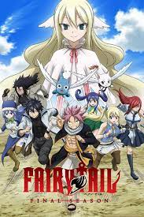
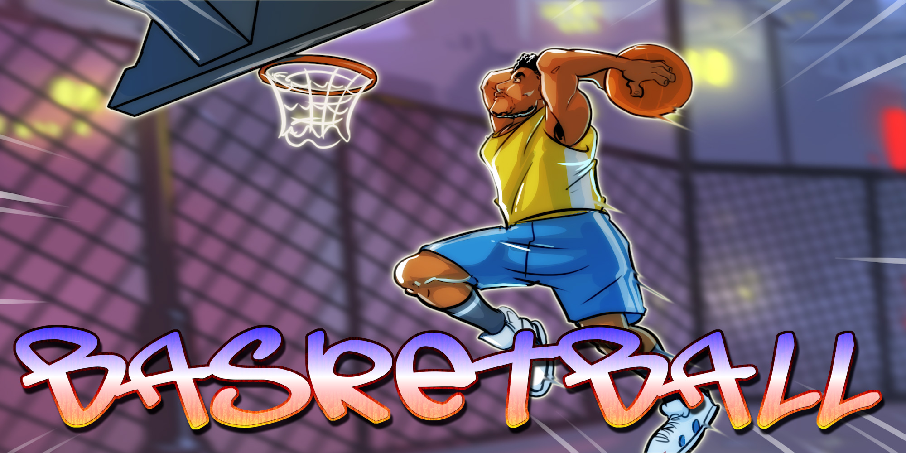
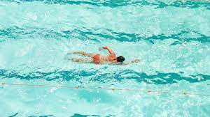

Music can change the world because it can change people.
Life seems to go on without effort when I am filled with music
I was born with music inside me. Music was one of my parts. Like my ribs, my kidneys, my liver, my heart. Like my blood. It was a force already within me when I arrived on the scene. It was a necessity for me - like food or water.
My fav Artist is Chrisbrown
My Fav anime is Fairytale
My FAV SPORTS is Basketball

I also Love Swimming
